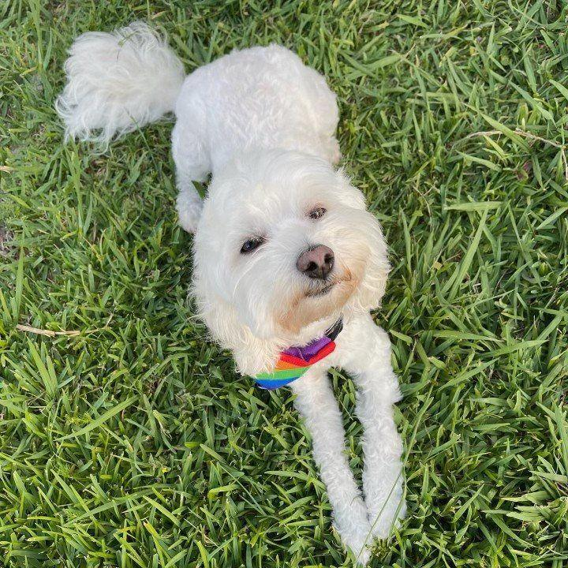
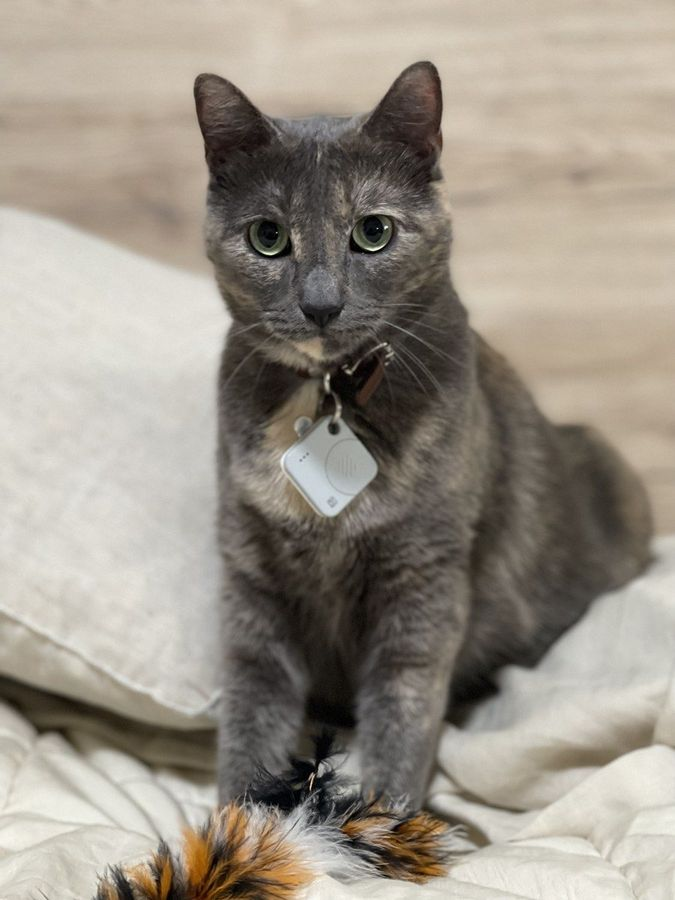
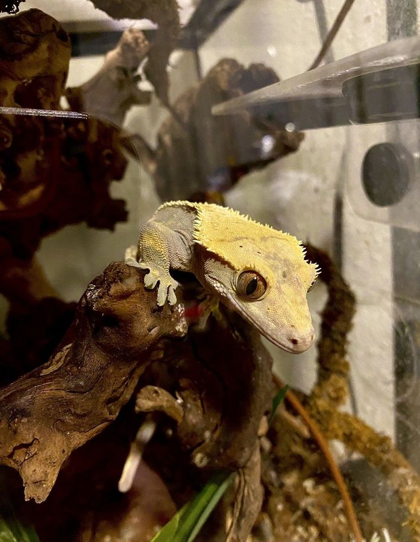
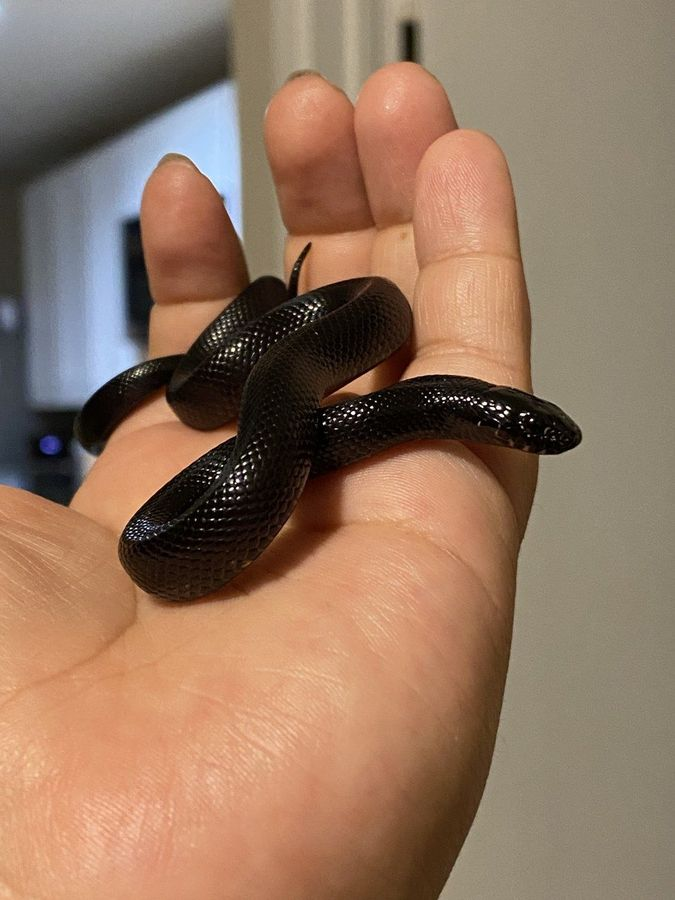
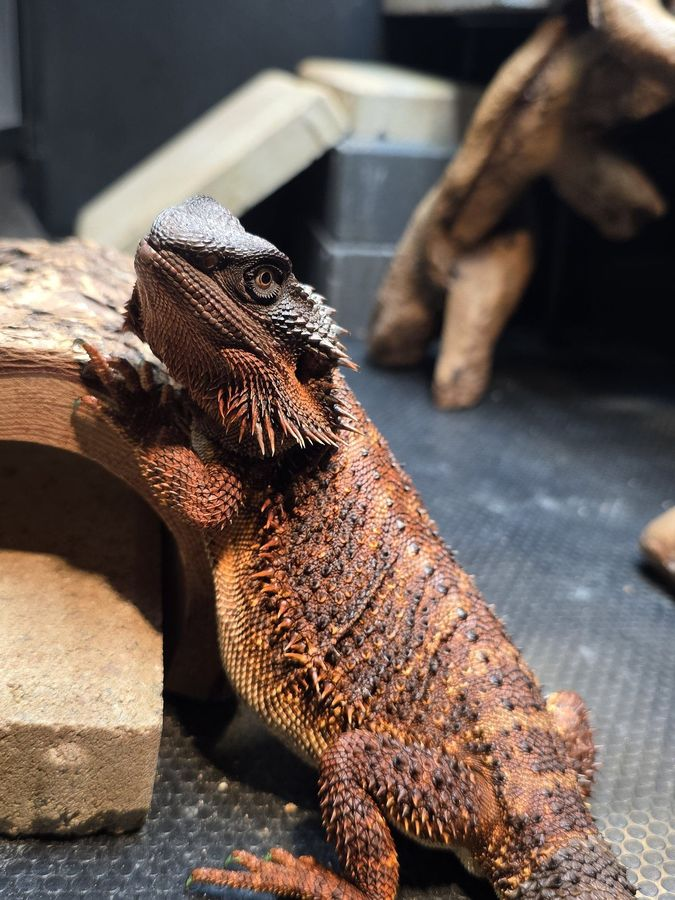
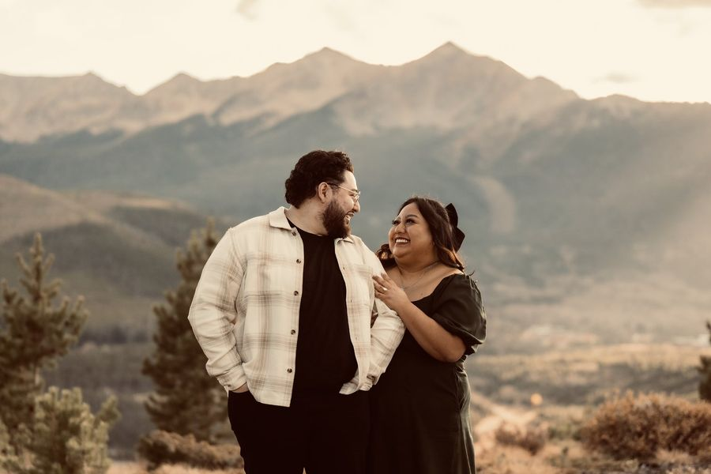

About me
First in my family to go to college. Still learning by taking things apart.
A curious marketer from Houston who learns by building.
I’ve spent six-plus years in marketing, usually turning a messy question into something a team can actually use. Outside work I keep the same habit: find the thing I don’t understand, take it apart, and learn enough to explain it.
I learned to figure things out before I learned to call it a strength.
I’m the oldest in my family and the first to go to college. A lot of the time, there wasn’t a ready-made answer or a person nearby who had already done the thing. I got comfortable teaching myself: finding the useful source, testing what I thought I knew, and asking a better question when the first one was wrong.
That background still shows up in how I work. I don’t need to be the person who already knows everything. I need to be the person who can make the unknown smaller, explain what changed, and keep moving without pretending the uncertainty was never there.
When a project is unfamiliar, I leave a trail: the question, the source, my first guess, and the next check. That makes handoffs calmer, because the next person can see what was decided and what is still open.
The crew that keeps me grounded.
Five pets who run the house, whether we agreed to that or not. Select any photo to see it larger.






What I’m into this fall.
A few things that shaped me.
A few things explain the way I show up better than a list of adjectives.
Always up for a good question.
LinkedIn is the easiest place to find me.
On a team, I’m most useful in the messy middle between the audience, the budget, the reports, and the next decision: make the question clear, build what helps, and explain what the result does and doesn’t mean.